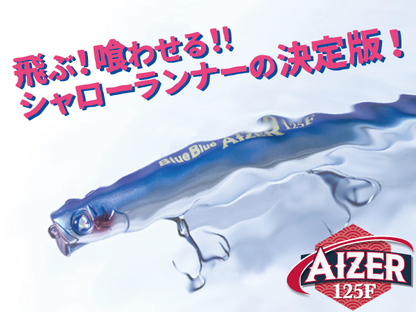
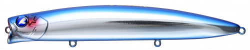
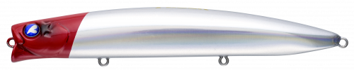
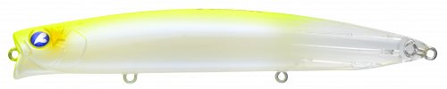
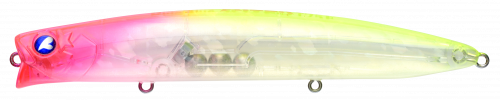
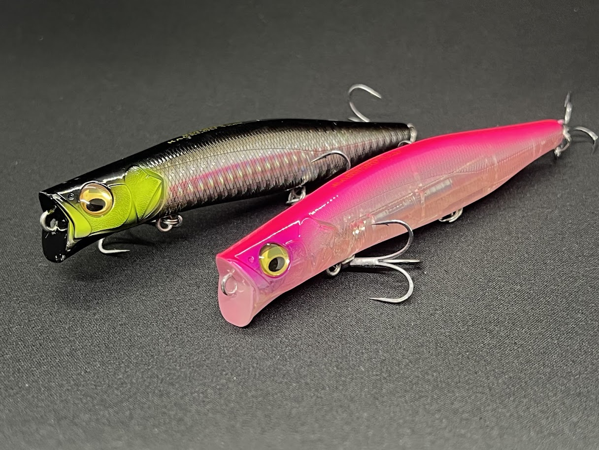
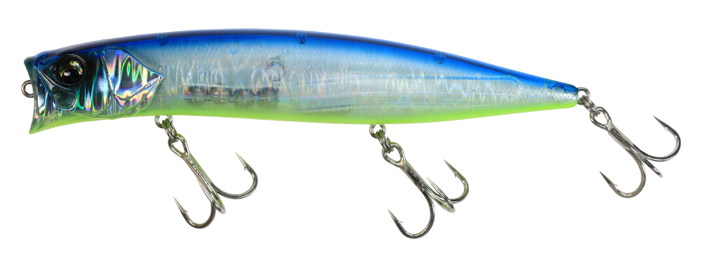

アイザー125F
（AIZER 125F）
アイザー125F（AIZER 125F）はBlueBlue（ブルーブルー）のシャローランナーです。
シーバスルアーの中でも激戦区のシャローランナーで、幅広い汎用性と使い手を選ばない「究極の使いやすさ」を突き詰めて開発された1本。「ポイントに着いたら迷わず、先発はAIZER」とメーカーが言い切る、シャローランナーのど真ん中です。

画像出典:BlueBlue公式HP
スペック
- メーカー
- BlueBlue（ブルーブルー）
- タイプ
- フローティング（シャローランナー）
- 全長
- 125mm
- 自重
- 22g
- フック
- #4×3
- リング
- #3
- レンジ
- 5〜30cm
- ターゲット
- シーバス
- 価格
- 2,596円（税込）
▼今すぐチェック

アイザー125Fの特徴
誰が投げても飛び、強めのアクションで広範囲から魚を呼ぶ「先発」のシャローランナー
-
トップクラスの飛距離と安定した飛行姿勢
ビギナーからエキスパートまで誰が投げてもトップクラスの飛距離が出るよう、重心位置やテールの形状を一から見直して設計。安定した飛行姿勢で、広いシャローエリアを効率よく探れる。
-
強めのアクションで広範囲から魚を呼ぶ
水受け面を比較的ワイドに設計し、強めのアクションで広範囲から魚を呼べる。巻き感が明確なので、水中でルアーがどんな状態かをイメージしやすい。
-
超低速域のイレギュラーなふらつき
超低速域で発生するイレギュラーなふらつきはこだわりのアクション。大型シーバスをアップクロスキャストで食わせる時の最大のキモになる。
アイザー125Fの使い方
基本はただ巻き。まずは飛距離を活かして広く投げ、レンジ5〜30cmをミディアムリトリーブで通して魚の反応を探る。巻き感が明確なので、流れの変化や水の重みも感じ取りやすい。
大型シーバスを狙う時は、アップクロスに投げて超低速で巻き、イレギュラーなふらつきを出して食わせる。流れの中ではラインスラッグを回収する程度の速度で流し込むドリフトも有効です。
アイザー125Fの得意な状況
干潟・河口・河川など、広いシャローエリアで最初の1本を投げたい状況が最大の出番。
ポイントに着いて魚の居場所がまだ分からない時に、飛距離とアピール力で広く探るパイロットルアーとして選びたい1本です。
ワンポイント
もう少し食わせに寄せたい時や、ひと回り下のレンジを引きたい時は、スローシンキングのアイザー125リラードに持ち替えると使い分けがしやすくなります。
ベイトが小さい時は100F、コノシロなど大型ベイトの時は160Fと、サイズで合わせるのも効果的です。
アイザーシリーズの使い分け
| モデル | 全長／自重 | 得意な場面 |
|---|---|---|
| 100F | 100mm／13.5g | 小型ベイト・レンジ5〜20cm・食わせ特化 |
| 125F | 125mm／22g | シリーズの基準・先発のパイロットルアー（本記事のモデル） |
| 125リラード | 125mm／24g | スローシンキング・止めると浮上する浮遊感・レンジ20〜50cm |
| 160F | 160mm／44g | 大型ベイトパターン・レンジ5〜30cm |
アイザーは100F・125F・125リラード・160Fの4モデル展開。125Fを基準に、ベイトのサイズや食わせたい度合いでモデルを選ぶのが基本だ。
オススメカラー
アイザー125Fは全12色＋WEB限定カラーを展開。オススメのカラーを厳選して紹介します。

#01 ブルーブルーブランド名を冠したカラー。澄み潮やデイゲームのナチュラル系として使いやすい。

#02 レッドヘッドホロ定番のレッドヘッドにホロのフラッシングをプラス。状況を問わず1本持っておきたい。

#03 チャートバックパールクリア視認性とシルエットのぼかしを両立。濁りやナイトゲームの先発に。

#08 ピンクチャートクリアピンクとチャートのアピールカラー。マズメ時や濁り潮で目立たせたい時に。
画像出典:BlueBlue公式HP
アイザー125Fに似ているルアー
-

カゲロウ124F メガバス 詳細はこちら＞124mmのシャローランナーの定番。重心移動による飛距離と表層特化のレンジで、広いシャローを探るという役割がアイザー125Fと重なる。
-

ハーデス127F バスデイ 詳細はこちら＞127mmのリップレスシャローミノー。MAX70mの飛距離で、アイザー125Fよりさらに沖まで届かせたい時の選択肢になる。
-
 コモモSF-125
アイマ
詳細はこちら＞
コモモSF-125
アイマ
詳細はこちら＞
シャローランナーの先駆けとなった125mmの名作。反応が渋い時に、超低速でじっくり見せる役としてアイザー125Fと使い分けたい。